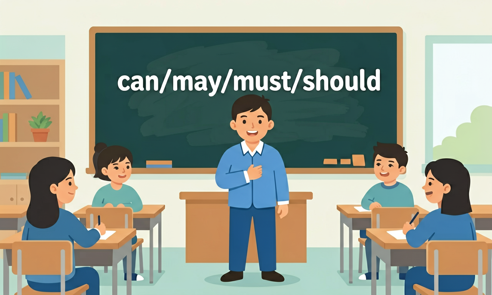

就语法知识而言，要帮助学生建立以语言运用为导向的‘形式—意义—使用’语法观，引导学生在理解主题意义的基础上，认识到语法形式的选择取决于具体语境。
❓ 为什么must和have to都是'必须'，但老师说考试时不能互换？
❓ can和may都表示'可以'，怎么判断什么时候用哪个？
❓ should和must有什么区别？一个建议一个命令吗？
学完这一课，这些问题你都能自信地回答。
🎯 能说出can/may/must/should的基本含义和用法区别
🎯 能判断句子中情态动词使用的正误并改正
🎯 能分析真实语境中情态动词的情感强弱差异
情态动词（can/may/must/should）是初中英语的重要内容。就语法知识而言，要帮助学生建立以语言运用为导向的‘形式—意义—使用’语法观，引导学生在理解主题意义的基础上，认识到语法形式的选择取决于具体语境。
重视在语境中呈现新的语法知识，指导学生在语境中观察和归纳所学语法的使用场合、表达形式、基本意义、使用规则和语用功能。
And：学生知道can表示能力
But：分不清can和be able to的区别
Therefore：明确can表现在能力，be able to表将来
can表示现在具备的能力，比如'I can swim 50 meters in one minute'（我能一分钟游50米）。这里强调说话时已经掌握的游泳技能。而be able to用于将来时，比如'I will be able to solve this math problem after practice'（练习后我就能解这道数学题）。注意：can没有将来时形式。
🌍 体育课上，老师说：'Anyone can try the high jump now'（现在谁都可以尝试跳高）。这里用can表示当下允许尝试的能力。
选择正确句子：
情态动词表能力、许可、推测、义务等，后接动词原形。can 能力/许可，may 许可/可能，must 必须/肯定推测，should 应该。注意否定意义差异：mustn't 禁止，needn't 不必。
And：学生知道may比can更正式
But：不清楚具体使用场景差异
Therefore：掌握正式/非正式场合选择
may用于正式场合请求许可，比如'May I borrow your dictionary, Mr. Li?'（李老师，我可以借您的词典吗？）。而can用于非正式场合，比如对同学说'Can I use your pen?'（能用下你的笔吗？）。特别注意：回答时都用can/can't，比如'Yes, you can'或'No, you may not'是错误的。
🌍 在图书馆，应该说'May I speak louder?'（我能大声说话吗？），而在操场上问同学'Can we play basketball now?'（现在能打篮球吗？）更合适。
哪句适合对校长说？
And：学生知道must表必须
But：常混淆must和should的强制程度
Therefore：区分强制要求与建议
must表示强制要求，比如'You must wear school uniforms on Monday'（周一必须穿校服），不遵守会受罚。should是建议，比如'You should drink 8 cups of water daily'（每天应该喝8杯水），不这样做也没关系。否定形式区别大：mustn't=禁止，shouldn't=不建议。
🌍 家长说：'You must finish homework before 9 pm'（必须9点前完成作业）是命令，而'You should review notes after class'（课后应该复习笔记）是建议。
哪句表示绝对禁止？
把情态动词拆成'能力(can)'、'许可(may)'、'强制(must)'、'建议(should)'四类
情态动词后接动词原形，表达说话人的态度或推测
must主观强制，have to客观要求；can表能力，may表许可
观察餐厅标识'You must wash hands'比'You should wash hands'更强制
用情态动词改写家长叮嘱'记得带伞'为'You should take an umbrella'
And：学生掌握单个情态动词用法
But：混合使用时容易混淆
Therefore：提升情境判断能力
根据场景选择正确情态动词：1）能力用can，如'I can run 800 meters in 4 minutes'；2）正式请求用may，如'May I open the window?'；3）规则用must，如'We must hand in reports by Friday'；4）建议用should，如'You should sleep 7 hours'. 注意：回答must提问用needn't表示不必。
🌍 班级规则：'You must arrive by 7:30 am, but you may leave early if you finish cleaning'（必须7:30到，但完成打扫可以早走）。
补全对话：- ___ I use your phone? - Sorry, you ___
复制提示词到 AI 学伴，生成「情态动词（can/may/must/should）」的mind map or summary table；也可以上传你手绘的示意图，请 AI 学伴点评。
复制后可粘贴到 AI 学伴继续对话。
问能力用 can；请求许可 can/may；禁止 mustn't；建议 should。
常见误区：常见误区是 must 与 have to、mustn't 与 needn't 混淆。
情态动词后一般接？
Which of the following sentences uses 'should' to give advice?
先独立作答，再点选项查看对错与错因。
Which sentence correctly uses 'must' to express obligation?
Which sentence correctly uses 'may' to ask for permission?
Which sentence correctly uses 'can' to express ability?
You ____ keep quiet in the library. (must/may)
答案：must
'Must' is used to express obligation in this context.
____ I borrow this book? (Can/May)
答案：May
'May' is used to ask for permission in this context.
请找出图书馆规则中使用的情态动词，并解释它们的具体含义。
【中考真题】'Look at the sign! You ___ smoke here.' (警示牌)
【迁移】医生对病人说：'You ___ take medicine on time.' 最合适的是
【辨析】'She ___ swim across the river.' 表示能力时用
✅ 问许可用May I...更正式
💡 混淆能力与许可功能
✅ mustn't=禁止，'不必'用needn't
💡 否定形式语义特殊
口诀：能可can，许用may，必须must，该should
类比：情态动词像交通灯：can是绿灯(可行)，may是黄灯(谨慎许可)，must是红灯(必须停)
复述本课两个核心概念的定义。
用本课方法分析一个新例子。
有同学认为：用can代替may请求许可 —— 请说明错在哪里。
有同学认为：把mustn't当'不必' —— 请说明错在哪里。
把还没弄明白的地方写下来问 AI 学伴。它会先帮你找到卡住的地方，再给你一个小小的提示，让你自己往前走一步。